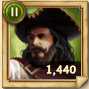
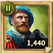
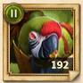
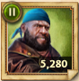
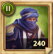
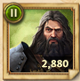
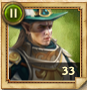
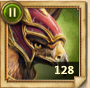
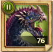

<style>
  .unit-grid {
    display: grid;
    grid-template-columns: repeat(auto-fill, minmax(140px, 1fr));
    gap: 14px;
    margin: 18px 0 6px;
  }
  .unit-card {
    background: #111827; border: 1px solid #1f2937; border-radius: 12px;
    padding: 10px; text-align: center;
  }
  .unit-card img {
    width: 96px; height: 96px; object-fit: cover; border-radius: 8px;
    display: block; margin: 0 auto 8px;
    image-rendering: -webkit-optimize-contrast;
  }
  .unit-name {
    font-size: 12px; line-height: 1.2; color: #cbd5e1; min-height: 30px;
  }
  .num {
    margin-top: 6px; font-weight: 700; font-size: 14px;
    background: #0d223b; border: 1px solid #1a3a61; color: #e5e7eb;
    padding: 4px 8px; border-radius: 8px; display: inline-block;
  }
</style>
<section id="CP_Marches">
<div class="intro">
<h2>📜 What is a CP March and Why Do It?</h2>
<ul>
<li>Players joining as reinforcements gain free CP with zero damage.</li>
<li>Only one player (the strongest unit stack) takes the damage during the fight.</li>
<li>CP is used to level up your Specialists — a progression available even before upgrading Guardsmen.</li>
</ul>
</div>
<div class="intro">
<h2>📜 How to Organize a Clan-March CP Run on Corax II (G9)</h2>
<p><strong>Goal:</strong> Farm quick Conquest Points (CP) with minimal losses by using Corax II as a "punching bag." This method is widely accepted by FBA/FOB communities and large kingdoms.</p>
<ol>
<li><strong>Prepare the "Tank" City</strong>
<ul>
<li><strong>Select a strong account (G9+)</strong> to host Corax II. This city must be unshielded and with broken walls during runs.</li>
<li><strong>Use one stack of Corax II (G9 flying unit)</strong> — ideal for CP run mechanics.</li>
<li><strong>No other troops garrisoned</strong> — avoids stack mixing and extra losses.</li>
</ul>
</li>
<li><strong>Attacker Setup</strong>
<ul>
<li><strong>Hero:</strong> <em>Dustan (mandatory)</em> — boosts vs. monsters and CP gains.</li>
<li><strong>Captains:</strong> Cleopatra, Aydae, Amanitore — best Strength vs. Leadership ratio.</li>
<li><strong>No Gear</strong>; <strong>Artifacts Allowed</strong> — avoids durability costs, but artifacts work fine.</li>
<li>Use Conquest Points personal Bonus & Strength boosts (optional).</li>
<li><strong>Troop Type:</strong> Guardsmen (high survivability vs. monsters):
          <ul>
<li>Preferably G7 Griffins (very effective against flying units).</li>
<li>G6/G5/G4 as budget options.</li>
</ul>
</li>
<li><strong>Use 3–12 stacks per player</strong> (main stack + small padding).</li>
</ul>
</li>
<li><strong>CP Run Execution</strong>
<ul>
<li>Attacker invites reinforcements and launches a Clan March toward Tank city with Corax II stack.</li>
<li>March launches — Corax II dies in 4-8 rounds; attackers earn lots of CP/kill.</li>
<li>Repeat 10 times.</li>
</ul>
</li>
<li><strong>Tips</strong>
<ul>
<li>Start with 2000 Corax II for testing and scale up to 50000 if needed. Aim for 4–8 hits max per attacking troop stack.</li>
<li>Use 50% Army Damage & Health boosts (optional).</li>
<li>Keep Temple high for revival discounts.</li>
<li>Coordinate in chat to maintain proper attack sequence.</li>
</ul>
</li>
<li><strong>Tips</strong>
<ul>
<li>The march leader need to hold between 4 and 8 layers of mercenaries with 50% higher health per layer than all the reinforcements layers you find in the tables in the bottom.</li>
<li>Chose between 4 and 8 layers from the next table and use the unit numbers provided there</li>
<h2>📦 Mercenary / Leaders – Icons & Counts</h2>
<div class="unit-grid">
  <!-- Folosește %20 în src pentru spații din numele fișierelor -->
  <div class="unit-card">
    
    <div class="unit-name">Chitinous Defender (Leader)</div>
    <div class="num">2000</div>
  </div>
  <div class="unit-card">
    
    <div class="unit-name">Combat Anteater (Leader)</div>
    <div class="num">2000</div>
  </div>
  <div class="unit-card">
    
    <div class="unit-name">Demonic Salamander</div>
    <div class="num">42</div>
  </div>
  <div class="unit-card">
    
    <div class="unit-name">Eternal Cannonner</div>
    <div class="num">40</div>
  </div>
  <div class="unit-card">
    
    <div class="unit-name">Galloper</div>
    <div class="num">1000</div>
  </div>
  <div class="unit-card">
    
    <div class="unit-name">Grim Stalker (Leader)</div>
    <div class="num">2000</div>
  </div>
  <div class="unit-card">
    
    <div class="unit-name">Highlander</div>
    <div class="num">2000</div>
  </div>
  <div class="unit-card">
    
    <div class="unit-name">Jago</div>
    <div class="num">100</div>
  </div>
  <div class="unit-card">
    
    <div class="unit-name">Pounder</div>
    <div class="num">2000</div>
  </div>
  <div class="unit-card">
    
    <div class="unit-name">Quicksand</div>
    <div class="num">1000</div>
  </div>
  <div class="unit-card">
    
    <div class="unit-name">Scarface</div>
    <div class="num">2000</div>
  </div>
  <div class="unit-card">
    
    <div class="unit-name">Slavic Warrior</div>
    <div class="num">2000</div>
  </div>
  <div class="unit-card">
    
    <div class="unit-name">Superior Epic Hunter (Guardsman)</div>
    <div class="num">800</div>
  </div>
  <div class="unit-card">
    
    <div class="unit-name">Warden</div>
    <div class="num">38</div>
  </div>
  <div class="unit-card">
    
    <div class="unit-name">Warregal</div>
    <div class="num">100</div>
  </div>
  <div class="unit-card">
    
    <div class="unit-name">Wasp-Man (Leader)</div>
    <div class="num">2000</div>
  </div>
  <div class="unit-card">
    
    <div class="unit-name">Wyvern</div>
    <div class="num">26</div>
  </div>
</div>
  <li>After each attack he need to revive and send again.</li>
<li>The march leader must check the troops joining the raid to ensure they do not exceed the maximum number of units indicated in the tables below. Otherwise, those troops will be killed in the first attack. </li>
</ul>
</li>
          
</ol>
</div>
<h2>MAX GUARDS (G) FORMATIONS / LAYER</h2>
<table>
<tr><th>Level</th><th>Gryphon</th><th>Cavalry</th><th>Halberd/Spear</th><th>Crossbow/Archer</th></tr>
<tr><td>G8</td><td>200</td><td>2000</td><td>4000</td><td>4000</td></tr>
<tr><td>G7</td><td>360</td><td>3600</td><td>7200</td><td>7200</td></tr>
<tr><td>G6</td><td>650</td><td>6500</td><td>13000</td><td>13000</td></tr>
<tr><td>G5</td><td>1000</td><td>10000</td><td>20000</td><td>20000</td></tr>
<tr><td>G4,G3,G2,G1</td><td colspan="4">NO LIMIT – Free use in all marches</td></tr>
</table>
<h2>MAX SPECIALISTS (S) FORMATIONS / LAYER</h2>
<table>
<tr><th>Level</th><th>Cavalry</th><th>Crossbow</th><th>Knight</th><th>Vulture</th></tr>
<tr><td>S8</td><td>200</td><td>2000</td><td>4000</td><td>4000</td></tr>
<tr><td>S7</td><td>360</td><td>3600</td><td>7200</td><td>7200</td></tr>
<tr><td>S6</td><td>650</td><td>6500</td><td>13000</td><td>13000</td></tr>
<tr><td>S5</td><td>1000</td><td>10000</td><td>20000</td><td>20000</td></tr>
<tr><td>S4,S3,S2,S1</td><td colspan="4">NO LIMIT – Free use in all marches</td></tr>
</table>
<h2>MAX MONSTERS / LAYER</h2>
<table>
<tr><th>Type</th><th>Max Troops</th></tr>
<tr><td>Monster 8</td><td>17</td></tr>  
<tr><td>Monster 7</td><td>39</td></tr>
<tr><td>Monster 6</td><td>94</td></tr>
<tr><td>Monster 5</td><td>255</td></tr>
<tr><td>Monster 4</td><td>900</td></tr>          
<tr><td>Monster 3</td><td>2500</td></tr>
</table>
<li><strong>Use all monsters you have and stacks layers but do not send more units than max allowed per layer</strong> </li>
          <h2>MAX Mercenary / LAYER</h2>
<table>
<tr><th>LVL/TYPE</th><th>Fly Specialists/guards</th><th>Raider Specialists/guards</th><th>Spearman Specialists/guards</th><th>Archers Specialists/guards</th><th>Hunters</th><th>MercMonster</th></tr>
<tr><td>LVL II Mercs</td><td>60</td><td>600</td><td>1200</td><td>1200</td><td>400</td><td>17</td></tr>
<tr><td>LVL VII Mercs</td><td>320</td><td>3200</td><td>6400</td><td>6400</td><td>3200</td><td>39</td></tr>
<tr><td>LVL VI Mercs</td><td>600</td><td>6000</td><td>12000</td><td>12000</td><td>6000</td><td>200</td></tr>
</table>
<div class="section">
<h2>CP RUN HERO SETUP</h2>
<ul>
<li>Use hero: Cleopatra, Aydae, Amanitore</li>
<li class="mandatory">Dustan is mandatory</li>
<li class="nogear">No gear (optional)</li>
<li class="artifacts">Artifacts allowed</li>
</ul>
</div>
</section>
